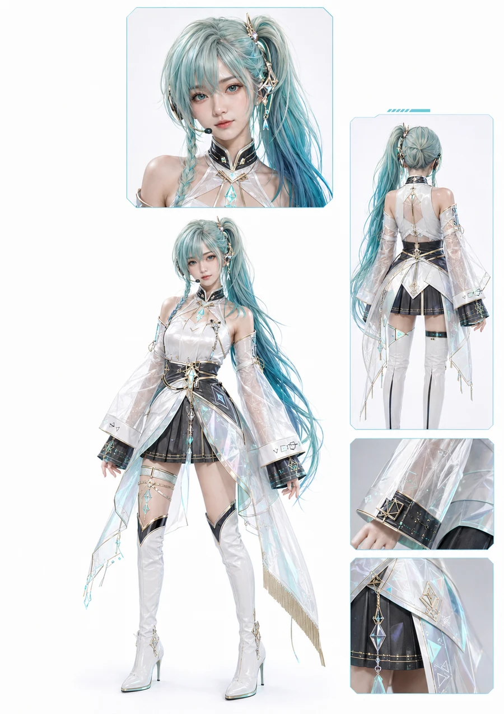
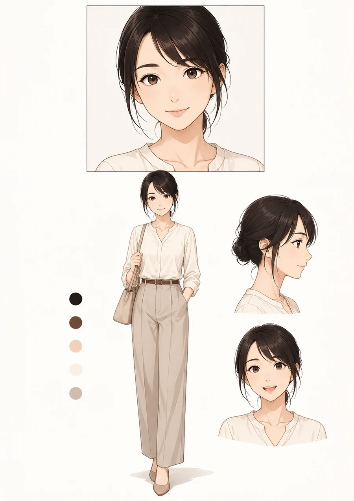
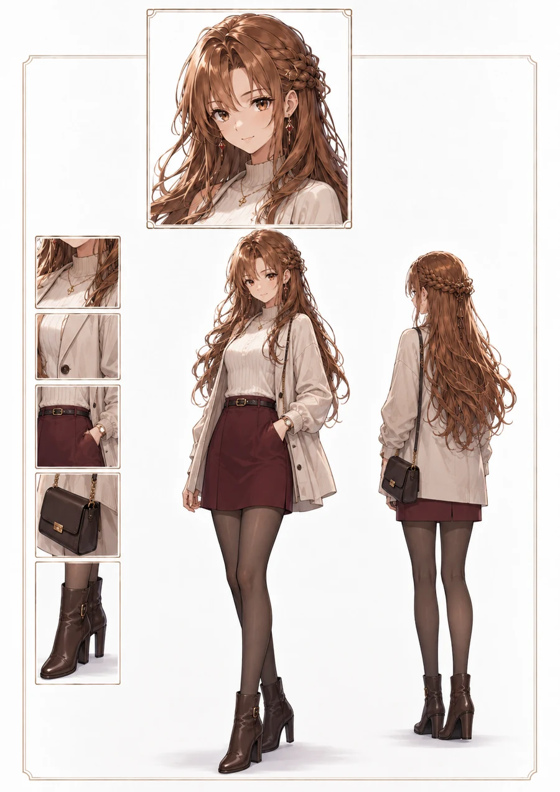
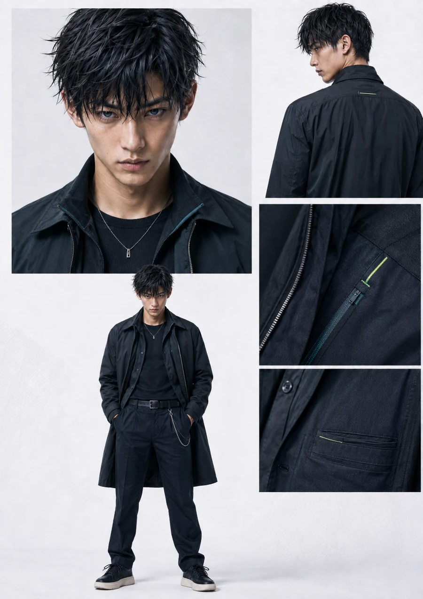
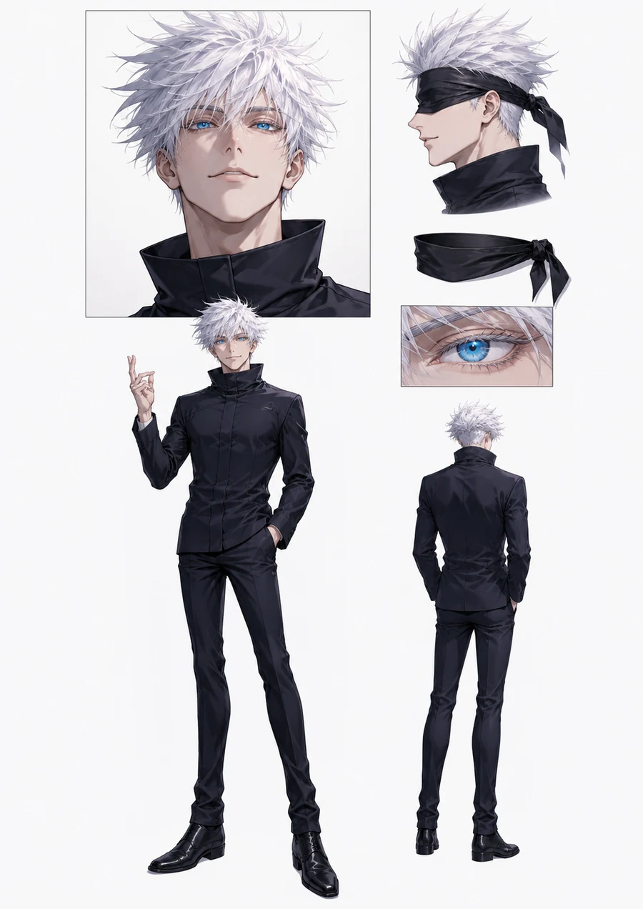
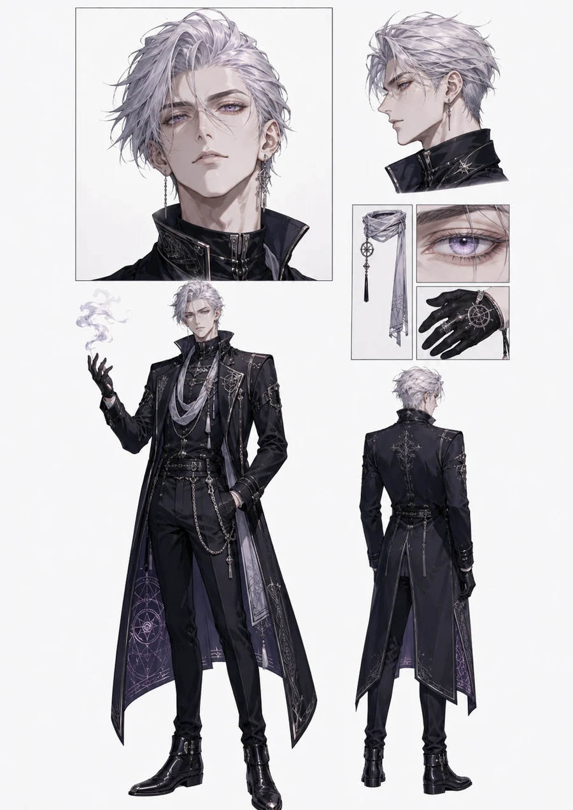
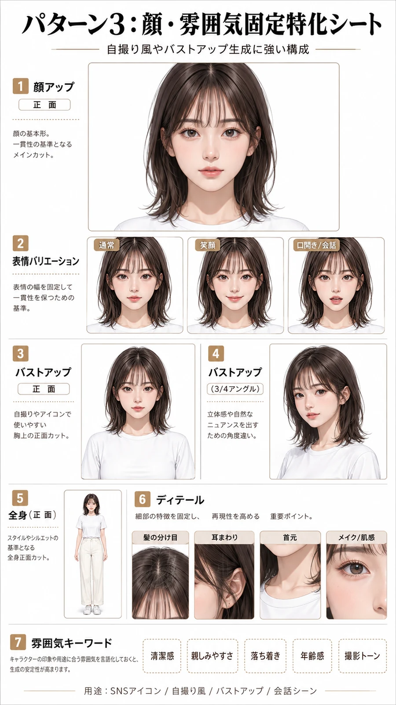

C013

01_女性_未来的アイドル_オリジナル修正版.png
1055 x 1491 / 1.97 MB
source: 01_女性_未来的アイドル_オリジナル修正版.png
sha256: c3107ed32dae
C014

02_女性_新垣結衣モチーフ_アニメ調.png
1055 x 1491 / 1.49 MB
source: 02_女性_新垣結衣モチーフ_アニメ調.png
sha256: a6bb4c782e0e
C015

03_女性_現代服キャラクター_アスナモチーフ修正版.png
1055 x 1491 / 1.80 MB
source: 03_女性_現代服キャラクター_アスナモチーフ修正版.png
sha256: 106cf38784f2
C016

04_男性_現代服キャラクター_潔世一モチーフ修正版.png
1055 x 1491 / 2.01 MB
source: 04_男性_現代服キャラクター_潔世一モチーフ修正版.png
sha256: ac8e959eb494
C017

05_男性_目黒蓮モチーフ_アニメ調.png
1055 x 1491 / 1.43 MB
source: 05_男性_目黒蓮モチーフ_アニメ調.png
sha256: 2b67c0263988
C018

06_男性_ゴシック風キャラクター_五条悟モチーフ修正版.png
1055 x 1491 / 1.85 MB
source: 06_男性_ゴシック風キャラクター_五条悟モチーフ修正版.png
sha256: 6088f48b8448
C019

07_テンプレート_パターン3_顔_雰囲気固定特化シート.png
941 x 1672 / 1.67 MB
source: 07_テンプレート_パターン3_顔_雰囲気固定特化シート.png
sha256: ea89f5077ac4